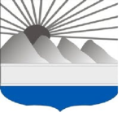
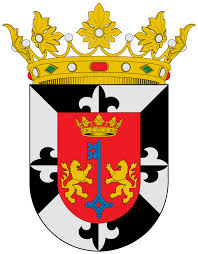
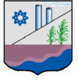

Dominican Republic

- Azua
- Senadora: Lia Diaz
- Poblacion: 298,246
- Barahona
- Senador: José Manuel del Castillo Saviñón
- Población: 226,898
-
- Bahoruco
- Senador: Melania Salvador Jimenez
- Poblacion: 111,269

- Dajabon
- Senador: David Sosa
- Población: 67,887

- Distrito Nacional
- Senador: Faride Raful
- Población: 1,484,789

- Duarte
- Senador: Franklin Romero Morillo
- Población: 384,789

- Elias Pina
- Senador: Aris Yván Lorenzo Suero
- Población: 70,589
- El Seibo
- Senador: Santiago Jose Zorrilla
- Población: 115,889
- Espalliat
- Senador: Carlos Gómez
- Población: 390,478
.jfif)
- Hato Mayor
- Senador: Cristobal Castillo
- Población: 89,578
- Hermanas Mirabal
- Senador: Luis Canaán
- Población: 103,974

- Independencia
- Senador: Valentín Medrano
- Población: 54,785
.jfif)
- La Altagracia
- Senador: Virgilio Cedano
- Población: 335,677

- La Romana
- Senador: Iván Fernández
- Población: 330,587
- La Vega
- Senador: Ramón Durán
- Población: 420,478
.jfif)
- Maria Trinidad Sanchez
- Senador: Alexis Yeb
- Población: 140,784
.jfif)
- Monsenor Nouel
- Senador: Héctor Acosta
- Población: 201,474

- Monte Cristi
- Senador: Ramón Gómez
- Población: 135,710
- Monte Plata
- Senador: Lenin López
- Población: 200,454
- Pedernales
- Senador: Dionis Carrasco
- Población: 38,941

- Peravia
- Senador: Milcíades Franjul
- Población: 298,747
.jfif)
- Puerto Plata
- Senadora: Ginette Bournigal
- Poblacion: 510 262
- Samana
- Senador: Pedro Catrain Bonilla
- Poblacion: 139,707
- San Cristobal
- Senador: Franklin Alberto Rodriguez
- Poblacion: 640,066
.jfif)
- San Jose de Ocoa
- Senador: Jose Antonio Castillo Casado
- Poblacion: 75,424

- San Juan
- Senador: Felix Bautista Rosario
- Poblacion: 317,293

- San Pedro de Macoris
- Senador: Franklin Peña Villalona
- Poblacion: 392,911
.svg.png)
- Sanchez Ramirez
- Senador: Ricardo De los Santos
- Poblacion: 248,807
.jfif)
- Santiago
- Senador: Eduardo Estrella Virella
- Poblacion: 1,503,000

- Santiago Rodriguez
- Senador: Casimiro Antonio Marte Familia
- Poblacion: 57,476

- Santo Domingo
- Senador: Antonio Taveras Guzman
- Poblacion: 3,263,000
- Valverde
- Senador: Martin Nolasco Vargas
- Poblacion: 217,026